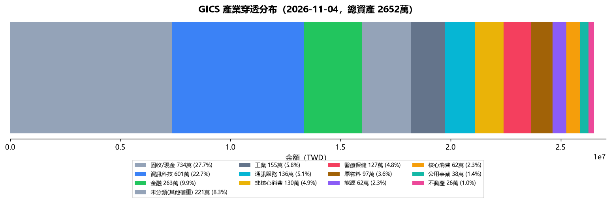

| 項目 | 內容 | 影響 |
|---|---|---|
| 總資產 | 26,520,486 TWD | 流動資產（不記錄不動產）；負債率 51.1%（含不動產）｜流動負債率 116.7%（不含不動產） |
| 總負債 | 30,952,746 TWD | 總負債合計（含房貸、保單借貸、質押） |
| 本月領息 | 9,817 TWD | 保單 9,817 + ETF 0 + 基金 0 |
| 被動月收 | 33,817 TWD | 實收：配息 9,817 + 房租 24,000｜預期：房租 80,100 + 配息保守 100,000 |
📌 口徑速記：月支出 159,210（v4 定版）｜配息 9,817（實收=常態）/ 100,000（保守）｜被動保守 180,100（配息 100,000 + 房租 80,100）
⚠️ 配息為截至今日實收，月底前依配息接力時程陸續補齊（撥回入帳後覆蓋率更高）
| 戰略類別 | 金額 TWD | 佔比 | 目標 | 缺口 |
|---|---|---|---|---|
| TW 台股市值型 含證券、平台基金與保單穿透部位，非證券帳戶市值；不同資產類別可能涉及穿透歸類 | 2,812,165 TWD | 10.6% | 10% | +0.6pp |
| 🇺🇸 美股市值型 | 9,952,312 TWD | 37.5% | 30% | +7.5pp |
| └ 科技股 | 3,803,106 TWD | 14.3% | 15% | -0.7pp |
| └ 非科技 | 6,149,206 TWD | 23.2% | ||
| 🛡️ 防守型配息 | 4,794,941 TWD | 18.1% | 30% | -11.9pp |
| 💵 債券 | 6,798,934 TWD | 25.6% | 25% | +0.6pp |
| 💵 安全現金（桶位＝餘數法） | 1,121,096 TWD | 4.2% | 5% | -0.8pp |
穿透分母：台股+美股+防守+債券（不含不動產）；管理費~1.5%，偏高於配息收益率。
【台股/大盤】 加權指數：42,636.36 (-1.55%) 台積電：2,265.00 (-1.31%) 【美股/外資】 美股：道瓊 51,786.72 (-0.38%) / 納指 25,372.01 (+0.83%) / S&P 7,568.92 (+0.36%) 費半：10,600.40 (+2.63%) 【CPI/利率】 美國CPI：美國 2026-09 CPI YoY 3.7%／Core 2.6%（FRED，資料月 2026-09） 【賣出訊號】 • 台股加權大跌 -1.55% 【買進訊號】 無 【最新市場消息】 • 台股市值2年暴增124％，成亞資中心新商機！金管會拚「4年有變」，先克服3道關卡 (來源：tw.news.yahoo.com) • 台股血洗1400點！先不要買台積電、聯電 低接鎖定7檔優質股 (來源：tw.stock.yahoo.com) • 期中選舉後美股必漲？11次歷史紀錄全數收紅 (來源：tw.news.yahoo.com) 【持倉關聯分析】 台股持倉市值型成長 2,812,165 TWD，今日大盤下跌 -1.55%，短線承壓。 【情報重點（含持倉關聯）】 🟡 注意 市場動態：費半：費半 今日 10,600.40 (+2.63%)，市場情緒看漲。 ✅ 參考 市場動態：台股加權：台股加權 今日 42,636.36 (-1.55%)，市場情緒看跌。 ✅ 參考 市場動態：台積電：台積電 今日 2,265.00 (-1.31%)，市場情緒看跌。（影響：0050）
保單現值 9,320,048 TWD（安聯 A+B 7,456,850 + 第一金 M&G入息基金A(美元避險月配)F 100%（10/08 轉換已生效） 1,863,198），本月配息合計 9,817 TWD。落實利潤再投資 SOP，於 T+4 最晚轉換申請日才執行 relay 轉換。
證券總市值 2,611,170 TWD（14檔）。本月已收配息：0 TWD。前三大：00878 19.2%、006208 17.4%、009816 9.1%。0056 凍結質押中，短期無法加碼。
| ETF | 狀態 | 除息日 | 配息 | 發放日 |
|---|---|---|---|---|
| 0050 | ✅ 已除息 | 7/21(二) | 0.6元 | 8/10 已領 |
| 006208 | ✅ 已除息 | 7/16(四) | 4.75元 | 8/10 已領 |
| 0056 | ✅ 已除息 | 7/21(二) | 1.35元 | 8/10 已領 |
| 00984A | ✅ 已除息 | 7/16(四) | 0.415元 | 8/10 已領 |
| 00888 | ✅ 已除息 | 7/27(一) | 1.753元 | 8/20 已領 3,496（除息時 2,000 股） |
| 00983D(8月) | ✅ 已除息 | 8/17(一) | 0.06元 | 9/10 已入帳 1,190 |
| 00878 | ✅ 已除息 | 8/18(二) | 1.01元 | 9/11 已入帳 15,150 |
| 00713 | ✅ 已除息 | 9/21(一) | 1.25元 | 10/13 已入帳 2,490（預估 2,500，扣匯費 10） |
| 00981A | ✅ 已除息 | 9/16(三) | 0.63元 | 10/13 已入帳 2,510（公告 0.63/股 預估 5,040；實收約 0.315/股＝半數 → 配息率或股數待確認） |
| 00983D(9月) | ✅ 已除息 | 9/16(三) | 0.061元 | 10/14 已入帳 1,210（預估 1,220，扣匯費 10） |
| 00919 | ✅ 已除息 | 9/16(三) | 1.1元 | 10/15 已入帳 6,590（預估 6,600，扣匯費 10） |
| 00918 | ✅ 已除息 | 9/18(五) | 1.75元 | 10/15 已入帳 1,740（預估 1,750，扣匯費 10） |
| 0056(10月) | ✅ 已除息 | 10/22(四) | 1.72元 | 11/11 待入帳 |
| 00984A(10月) | ✅ 已除息 | 10/19(一) | 0.473元 | 11/13 待入帳 |
| 00888(10月) | ✅ 已除息 | 10/27(二) | 1.5元 | 11/20 待入帳 |
| 00927(10月) | ✅ 已除息 | 10/19(一) | 2.0元 | 11/13 待入帳 |
| 00983D(10月) | ✅ 已除息 | 10/19(一) | 0.061元 | 11/12 待入帳 |
| 00983D | 🔜 下一梯次 | 11/17(二) | 待公告元 | 12/10 前後 |
| 00984A | 🔜 下一梯次 | 2027/1 | 待公告元 | |
| 0056 | 🔜 下一梯次 | 2027/1 | 待公告元 | |
| 00888 | 🔜 下一梯次 | 2027/1 | 待公告元 | |
| 00878 | 🔜 下一梯次 | 11/17(二) | 待公告元 | 12/11(五) |
| 006208 | 🔜 下一梯次 | 11月中（待公告） | 待公告元 | |
| 0050 | 🔜 下一梯次 | 2027/1 | 待公告元 | |
| 00927 | 🔜 下一梯次 | 2027/1 | 待公告元 | |
| 00919 | 🔜 下一梯次 | 12月（待公告） | 待公告元 | |
| 00918 | 🔜 下一梯次 | 12月（待公告） | 待公告元 | |
| 00713 | 🔜 下一梯次 | 12月（待公告） | 待公告元 | |
| 00981A | 🔜 下一梯次 | 12月（待公告） | 待公告元 |
房租月收 80,100 TWD〔常態應收；當月已收 24,000、待收 56,100〕，覆蓋月支出 50%。當月應收 80,100 = 大義街1樓24,000+大義街23樓21,000+洲際W33,000+管理費2,100｜已收 大義街1樓24,000（24,000）｜待收 56,100可動用流動資金 1,121,096 TWD（Moneybook 真值 2,021,096 − 指定清償款 900,000），餘裕充足 ✅
指定用途款 590萬＝✅ 元大證金 96萬＋✅ 安聯-已轉 200萬＋✅ 安聯-10/1 101萬＋✅ 第一金-10/1 101萬＋⏳ W房貸預繳 20萬＋⏳ 國泰保留 70萬＋⏳ 未用罄 2萬（轉帳中者待 MB／截圖確認才入帳）
基金總市值 12,568,172 TWD ＝ 鉅亨網 774,595 ＋ 國泰基金 11,793,577（富達 5,771,414 + 聯博 977,783 + B11 5,044,380）。本月已收配息：0 TWD。一般申購-台新美日台半導體基金A-日圓 113,416 / 一般申購-台中銀台灣優息基金-B配息台幣 46,378 / 一般申購-路博邁台灣5G股票基金T月配級別(台幣) 82,155 / 一般申購-元大台灣卓越50ETF(0050)連結基金-台幣B配息 47,069 / 一般申購-國泰台灣高股息基金B 7,559 / 一般申購-貝萊德世界能源A10美元總報酬穩定配息 5,838 / 一般申購-貝萊德世界健康科學A10美元總報酬穩定配息 5,191 / 一般申購-安聯收益成長AMg7月收總收益美元 3,375 / 一般申購-安聯台灣科技基金 2,940 / 一般申購-聯博-全球多元收益基金AD月配美元 2,916 / 一般申購-聯博-美國成長基金AP總報酬月配美元 2,942 / 一般申購-摩根基金-JPM多重收益美元對沖A穩定月配 2,970 / 一般申購-貝萊德世界黃金A2美元 2,952 / 一般申購-貝萊德全球股票收益A6美元穩定配息 3,142 / 一般申購-貝萊德世界科技A10美元總報酬穩定配息 3,858 / 一般申購-貝萊德世界黃金A10美元總報酬穩定配息 2,366 / 一般申購-貝萊德全球智慧數據股票入息A11美元強化穩定配息 3,048 / 一般申購-富達全球動能多元基金A股C月配美元 2,910 / 一般申購-M&G入息基金A(美元避險月配)F 2,965 / 一般申購-安聯AI收益成長多重資產基金-B(月配)美元 6,193 / 自由Pay-路博邁台灣5G股票基金T累積級別(台幣) 228,290 / 自由Pay-元大台灣卓越50ETF(0050)連結基金-台幣A不配息 109,024 / 自由Pay-統一奔騰基金 87,098 / 國泰直購-富達全球動能多元B股C月配息美元 5,771,414 / 國泰直購-貝萊德智慧數據收益成長B11-美元-強化穩定月配息 5,044,380 / 國泰直購-聯博全球多元收益AD美元月配 977,783 / 一般申購_平台小計 350,183 / 平台小計 774,595
本月配息合計：9,817 TWD
| 站別 | 基金 | 配息時間 | T+4截止 | 狀態 |
|---|---|---|---|---|
| 第一站（月初） | 摩根JPM多重收益（安聯A+B；第一金 FJXX） | 月初（10/7、11/9、12/7、1/7） | 10/1（10月） | ✅ 正常運作 |
| 第二站（月中） | 安聯收益成長 + M&G入息 | 月中（安聯 10/14、M&G 10/16） | 10/8（安聯）、10/12（M&G） | ✅ 正常運作 |
| 第三站（月底） | 安聯AI收益 + 貝萊德世界科技A10 + PIMCO收益增長 | 月底（AI 10/28、PIMCO 10/28、A10/聯博 10/29） | 10/22（AI）、10/22（PIMCO）、10/23（A10） | ✅ 正常運作 |
| 基金 | 11月 | 12月 |
|---|---|---|
| 摩根JPM | 11/09→11/03 | 12/07→12/01 |
| 安聯收益成長 | 11/13→11/09 | 12/14→12/08 |
| M&G入息 | 11/20→11/16 | 12/18→12/14 |
| PIMCO | 11/24→11/18 | 12/29→12/23 |
| 安聯AI收益 | 11/25→11/19 | 12/29→12/23 |
| 聯博 | 11/27→11/23 | 12/30→12/24 |
| 貝萊德A10 | 11/27→11/23 | 12/30→12/24 |
除息日→T+4轉換截止。T+4 = 除息日前4工作日。
| 指標 | 數值 TWD | 備註 |
|---|---|---|
| 現值 | 7,456,850 | 最新 market value |
| 本月配息 | 9,817 | 當月配息 |
| 指標 | 數值 TWD | 備註 |
|---|---|---|
| 現值 | 1,863,198 | 配息前 |
| 本月配息 | 0 | 上月底配息 |
| 銀行 | 卡片 | 繳款日 | 近期應付 TWD | 狀態 |
|---|---|---|---|---|
| 玉山銀行 | Unicard / UNI | — | 3,580 | ✅ 無欠款（溢繳） |
| 台新銀行 | Richart | — | 2,990 | 🔄 待扣繳 |
| 永豐銀行 | SPORT | — | 167 | 🔄 待扣繳 |
| 台北富邦 | momo / J | — | 26,626 | 🔄 待扣繳 |
| 國泰世華 | CUBE | — | 17,619 | 🔄 待扣繳 |
| 銀行 | 貸款名稱 | 扣款日 | 金額 TWD | 狀態 |
|---|---|---|---|---|
| 永豐銀行 | 永豐房貸 (YY) | — | 5,712,527 | — |
| 永豐銀行 | 永豐房貸 (YYDU) | — | 4,540,812 | — |
| 永豐銀行 | 永豐房貸 (XZ) | — | 2,752,005 | — |
| 國泰世華 | 國泰房貸（大義街轉貸 2.6%） | 20日 | 12,000,000 | 9/20起月付 26,000 |
| 國泰世華 | 基金質押（質押基金池 1,179.4 萬） | 2.65% | 5,900,000 | 9/29 撥款入帳 |
📋 執行中決策追蹤
| 日期 | 決策 | 狀態 | 決策卡 |
|---|---|---|---|
| 2026-09-22 | 00921 暫停投入（第1批未成交）— 待重新定案 | 已確認 | — |
| 2026-10-01 | 🏠 洲際W 轉貸延至 11 月再處理 | 已確認 | — |
| 2026-10-06 | 資安 remediation：repo 五步（public→private／HEAD 淨化／filter-repo／force-with-lease／Pages 驗 404）＋第 1 步已完成 | 待處理 | — |
| 2026-10-09 | 台新帳號 ••• 是否為 Moneybook 納管帳戶（週報事件鏈資金路徑對帳殘項） | 待處理 | — |
| 2026-10-14 | 台股解凍後分批規則定版（節奏／單次上限／停止條件） | 已確認 | — |
| 2026-10-16 | 資安：HEAD 仍殘留金鑰樣式字串（2 份舊日報＋safe_read.py） | 待處理 | — |
| 2026-10-20 | 程序違規紀錄：未授權先推送（47f41c73／635c618a） | 待處理 | — |
| 2026-10-20 | 投資結構修正計畫 v1：配息吃本金／美股超標7.3pp | 已確認 | 📑 決策卡 |
| 2026-11-02 | 標案 11/11 投標：押標金 700,000 準備（現金支應）＋得標後 300 萬藍圖 | 已確認 | — |
🔧 技術債（工程／治理類 · 另冊 tech_debt.json）72 筆｜P0 1／P1 8／P2 35／未分級 25｜最舊 2026-09-16（49 天）｜⚠️ 逾 45 天未結 1 筆
| 日期 | 項目 | 金額 TWD | 狀態 |
|---|---|---|---|
| 2026-11-05 | 女友還款（每月6,000） | 6,000 | 🔄 還款中 |
| 2026-11-06 | 🎯 投標前置（T-5 週五）：確認押標金 700,000 金額與繳法 | 📋 待辦 | |
| 2026-11-10 | 🎯 投標前一日：押標金到位＋文件複核 | 📋 待辦 | |
| 2026-11-11 | 🎯 標案投標日（押標金 700,000） | 📋 待執行 | |
| 2026-11-04 | 🏥 童綜合回診（晚上） | 📋 待辦 | |
| 2026-11-06 | 🎓 教育訓練（東海站）10:00 | 📋 待辦 |
🔁 配息接力時間表：💰 = 配息基準日（基準日+12天左右入帳）、🔴 = T+4 轉換截止（除息前4工作日）。三站依配息時間循環領息：第一站（10/7） → 第二站（10/14） → 第三站（10/28）。
📅 緊急應變資料：2026-11-04 13:03（台股應變分析；未觸發門檻則沿用此份；美股時段 21:30 每交易日固定更新）
【一、市場概況】| 產業 | 金額 | 佔比 | 狀態 |
|---|---|---|---|
| 高科技/半導體 | 4,854,031 | 18.5 | 🟢 未達紅線 30%（GICS 口徑 18.5%｜全基金官方/晨星真值，2026-08-22 定版；重算需重跑產業穿透） |
| 金融/電信 | 1,833,638 | 7 | |
| 醫療/公用事業/不動產 | 1,702,663 | 6.5 | |
| 固收與現金 | 11,687,099 | 44.6 | |
| 實物避險-黃金 | 320,068 | ⛔ 已結案（2026-10-30）：既有部位保留不賣；不再有後續建倉／分批指示 | |
| 實物避險-石油 | 0 | 🔴 Locked（radar_state 標記，機構撤離中） |
| 產業 | 金額 | 佔比 |
|---|---|---|
| 固收/現金 | 7,348,367 | 27.7% |
| 資訊科技 | 6,035,578 | 22.7% |
| 金融 | 2,643,534 | 9.9% |
| 未分類(其他權重) | 2,209,341 | 8.3% |
| 工業 | 1,546,631 | 5.8% |
| 通訊服務 | 1,360,250 | 5.1% |
| 非核心消費 | 1,304,156 | 4.9% |
| 醫療保健 | 1,266,847 | 4.8% |
| 原物料 | 968,407 | 3.6% |
| 能源 | 622,363 | 2.3% |
| 核心消費 | 622,187 | 2.3% |
| 公用事業 | 383,666 | 1.4% |
| 不動產 | 263,224 | 1.0% |

| 產業 | 買什麼 | 金額 | 節奏 |
|---|---|---|---|
| 現金保留 | 台幣活存/MMF | 454,000 | 守住現金底線 700,000.0；防守合併 66.0%（防守承接凍結（2026-08-21 使用者：基金也有配息應合併計算）） |
US30Y 5.32%（即時讀值｜讀值日 2026-11-03） 🟡｜VIX 16｜美元信用壓力 71.5🔴｜科技 57.5｜確定收益 57.4｜地緣 43.0｜緊急應變分 65
影響：
避險現況：黃金：367,192 / 目標 105萬（已建保單32萬，剩餘PI後）｜石油：4,958 / 目標 26萬（缺口大）｜防守：合併口徑 66.0%（≥60% 已足、承接凍結）｜現金：可動用 1,121,096（帳戶層真值 2,021,096）守底線 70萬
因應三步驟：
評估已核准寫入日報 8/9 決策核心區塊（2026-08-21）
🛡️ 防禦維度 49.5%（債券＋現金/貨幣＋低波高股息防禦＋配息型基金權益＋保單內防守型高股息權益（2026-11-03 裁決 S1）＋避險衛星（2026-10-30 結案，以 0 計入）｜抗跌/LTV保護）＝ 債券 6,798,934 + 現金 1,121,096 + 低波 1,089,462 + 配息型基金權益 3,367,500 + 避險衛星（2026-10-30 結案，不計入；黃金部位保留於原五桶）
💵 收入引擎 69.5%（全配息資產+不動產租金｜現金流覆蓋）＝ 全配息資產 + 房租 80,100/月
核心：配息≠防守，兩維度分離計算、獨立風控；避險衛星以目標值計入防禦維度（現況未建倉，目標金額由避險衛星欄位動態讀取）；配息型基金權益＝B11 依官方成分 62.58/32.65/4.77（權益部位＋內部現金，內部現金不進現金桶）；現金/貨幣停泊＝可動用台幣活存，帳戶層真值與指定用途款一律由 snapshot 數字欄位動態生成（2026-09-30 P0-1 移除手寫金額）｜【2026-10-30 裁決】避險衛星整體機制結案 → 原以『目標值 1,310,000』計入之口徑作廢，改以 0 計入；理由：黃金保單 367,192 已在五桶內計入，再加會重複計算，且已作廢的配置目標不應影響配置建議。實際部位（黃金 367,192／石油 4,958）保留不賣、仍計入總資產與穿透。分母維持既定口徑＝total_assets − 指定用途款 900,000＝26,080,153（9/29 裁決），故佔比 47.7%、較原 52.7% 降 5.0pp；若以總資產 26,520,486 為分母則為 46.11%（-6.6pp），非本系統口徑。
🎯 四大市場情境（當前：區間震盪）：多頭 防禦≥40/收入≥60/LTV≤55 ｜ 震盪 防禦≥50/收入≥65/LTV≤52 ｜ 股債雙殺 防禦≥55/收入≥70/LTV≤50 ｜ 熊市 防禦≥60/收入≥70/LTV≤48
📐 現況對照（震盪標準 防禦≥50／收入≥65）：防禦 49.5% ⚠️ 未達 ｜ 收入 69.5% ✅｜LTV 見第八章風險紅線（動態）
🧑💻 CIO 觀點
①配置：台股10.6%不動，科技14.3%為最大減碼區（科技-175、市值型-315、高股息-352百萬），資金轉向塑化+38、債券+31、航運+25；固收/現金 4.2%續守。 ②最大風險：科技集中疊加台股重挫-1.55%、台積電-1.31%，賣訊1且輪動最弱為科技，屬評價面與資金面雙殺。 ③動作：本週乾粉保留，不新增科技曝險；避開資訊科技，輪動觀察醫療(XLV)相對強勢與塑化、航運資金流入，債券桶位維持。| 資產分類 | 現況% | 目標% | 偏離pp | 動作 | 精算金額 | 階梯 | 觸發條件 |
|---|---|---|---|---|---|---|---|
| 台股市值型成長 | 10.6% | 10% | +0.6 | 觀察(凍結期) | 0 | 觀察 | 僅寫入警示日誌，不產生交易建議｜rotation 交易計畫 |
| 美股市值型成長 | 37.5% | 30% | +7.5 | 觀察(凍結期) | 0 | 中等再平衡 | 計算調整金額，納入週報指示卡｜逢彈減碼 ≤20萬/次（8/19 核准） |
| 防守型配息 | 18.1% | 30% | -11.9 | 承接凍結 | 0 | 大規模再平衡 | 優先等級拉高，下週必須處理｜合併 66.0% ≥60% 凍結 |
| 債券 | 25.6% | 25% | +0.6 | 凍結 | 0 | 觀察 | 僅寫入警示日誌，不產生交易建議｜基金經理人調整（PIMCO/M&G/00983D），不另建債梯 |
| 現金/安全網 | 4.2% | 5% | -0.8 | 觀察(凍結期) | 0 | 觀察 | 僅寫入警示日誌，不產生交易建議｜底線制：超額 421,096.0 待部署（MMF 停泊）；另指定清償款 900,000 不列可部署 |
| 產業/衛星 | 動作 | 標的 |
|---|---|---|
| 資訊科技 | ⏸ 避開（資金流出） | 0050/006208(含台積電50%)、00924(純科技) |
| 核心消費 | 🟡 觀察（資金中性） | 0050(含核心消費成分:統一/大成等) |
| 醫療保健 | 🟡 觀察（資金中性） | 保單健康科學A2（8/24 轉換 50萬涵蓋） |
| 黃金衛星 | 🟢 順勢（COT 淨多單週增）（COT 淨多 186,451） | 00635U（PI 後分批 40/30/20，單次≤20萬） |